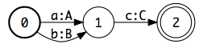
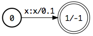
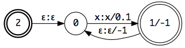

User Guide¶
Installation¶
Install the OpenFst library.
pyfst can be installed using pip:
pip install pyfst
It is recommended to install Graphviz and the IPython notebook to immediately visualize the created transducers and inspect the result of the operations.
Basic usage¶
The following code:
import fst
t = fst.Transducer()
t.add_arc(0, 1, 'a', 'A')
t.add_arc(0, 1, 'b', 'B')
t.add_arc(1, 2, 'c', 'C')
t[2].final = True
creates an unweighted transducer t with 3 states, 3 arcs with lowercase input labels and uppercase output labels, and sets the state with id 2 as final:
By default the state with id 0 is set as the initial state.
It is also possible to add weights on the arcs of the transducer and on the final states. For example:
a = fst.Acceptor()
a.add_arc(0, 1, 'x', 0.1)
a[1].final = -1
creates a weighted acceptor a (input and output labels are equal) with a single arc of tropical weight 0.1 and a final state of weight -1:
Once a transducer has been created, operations can be applied to it. For example, the method a.closure() returns the Kleene closure a* of the previous transducer:
Weights¶
Two types of weigths are supported: tropical and log weights. Their properties are summarized in the table below:
| Semiring | x ⊕ y | x ⊗ y | 0 | 1 | Prefix |
|---|---|---|---|---|---|
| tropical | min(x, y) | x + y | ∞ | 0 | Std |
| log | -log(e^-x + e^-y) | x + y | ∞ | 0 | Log |
StdTransducer/LogTransducer create transducers with automatic symbol table management and arc label conversion.
StdAcceptor/LogAcceptor create acceptors with identical input and output labels.
The underlying classes StdVectorFst/LogVectorFst can be instantiated without symbol tables and directly use integers for arc labels.
An existing XVectorFst can be converted to the other semiring Y by passing it as an argument to the YVectorFst constructor.
linear_chain() creates a linear chain transducer from any sequence of strings:
fst.linear_chain('fst')
The simplified classes Transducer, Acceptor and linear_chain() take an optional semiring argument which is equal to 'tropical' by default.
Operations¶
Several operations are available on all transducers, as methods of the created objects. There are two types of operations: destructive (⟲) like connect(), which modify the object, and constructive (☛), like reverse(), which return a new transducer. Some common binary operations also have shortcuts: for example, a.compose(b) == a >> b.
State and arc access¶
Often it is necessary to produce strings from a transducer or to directly access its states and arcs. t.states is an iterator over the states of the transducer t and t[i] returns the state with id i. For a state s, s.arcs is an iterator over the arcs outgoing from that state. Finally, for an arc a, a.nextstate is the id of the state it points to.
For example, the following code with print all the arcs in transducer t:
for state in t.states:
for arc in state.arcs:
print('{} -> {} / {}:{} / {}'.format(state.stateid,
arc.nextstate,
t.isyms.find(arc.ilabel),
t.osyms.find(arc.olabel),
arc.weight))
It is also possible to iterate over all the paths of a given transducer:
import operator
for i, path in enumerate(t.paths()):
path_istring = ''.join(t.isyms.find(arc.ilabel) for arc in path)
path_ostring = ''.join(t.osyms.find(arc.olabel) for arc in path)
path_weight = reduce(operator.mul, (arc.weight for arc in path))
print('{} | {} / {}'.format(path_istring, path_ostring, path_weight))
Symbol tables¶
Symbol tables map strings to integers and back. SymbolTable() creates an empty symbol table which maps EPSILON == 'ε' to EPSILON_ID == 0. For a symbol table instance sym and a string label, sym[label] returns an integer label_id and sym.find(label_id) returns the corresponding label.
The constructors Transducer, Acceptor return transducers with respectively two and one symbol tables, such that add_arc() accepts string labels. Basic transducers may or may not have input (t.isyms) and output (t.osyms) symbol tables. When operations are applied on transducers with symbol tables, these must be compatible. In practice, this implies reusing symbol tables such as in the following example:
x = fst.linear_chain('x')
x + fst.linear_chain('y', syms=x.isyms) # this will work
x + fst.linear_chain('y', syms=x.osyms) # this will work too
x + fst.linear_chain('y') # this will fail
I/O¶
Transducers and symbol tables can be saved as binary objects on disk, using their write() method which takes the path of a file as an argument. Binary files created with OpenFst can be read with the corresponding methods: read_symbols() for SymbolTable, read_std() for StdVectorFst and read_log() for LogVectorFst.

pyfst wraps the OpenFst library in Python, making its excellent C++ API easily accessible for quick development and prototyping
Useful links
Table Of Contents
Related Topics
- Documentation overview
- Previous: Introduction
- Next: API